Adéntrate en el corazón de Colombia y descubre Risaralda, un departamento que palpita con la vitalidad de la naturaleza y el encanto de sus paisajes. Aquí, donde la Cordillera Central se funde con el Paisaje Cultural Cafetero, te invitamos a explorar un mundo de sensaciones. Desde los picos que acarician las nubes hasta los ríos que serpentean entre valles esmeralda, Risaralda te ofrece un abanico de experiencias ecoturísticas que despertarán tus sentidos y nutrirán tu alma. Recorre senderos ancestrales que te llevarán a cascadas escondidas, observa aves multicolores que danzan entre los cafetales, y sumérgete en la cultura de comunidades que han vivido en armonía con la tierra durante generaciones. En Risaralda, el ecoturismo no es solo una actividad, es una filosofía de vida que nos invita a conectar con la naturaleza de manera responsable y sostenible. Únete a nosotros en este viaje de descubrimiento y sé parte de la conservación de este paraíso natural.


Bioparque Bonita Farm es un espacio dedicado a la conservación y la educación ambiental, donde el contacto con animales rescatados y la exploración de senderos naturales brindan una experiencia única. Ideal para toda la familia, este lugar invita a reflexionar sobre el cuidado del medio ambiente mientras se disfruta de la biodiversidad de Risaralda.

Descripción de la tarjeta 2.

Descripción de la tarjeta 1.

Descripción de la tarjeta 2.

Descripción de la tarjeta 1.

Descripción de la tarjeta 2.
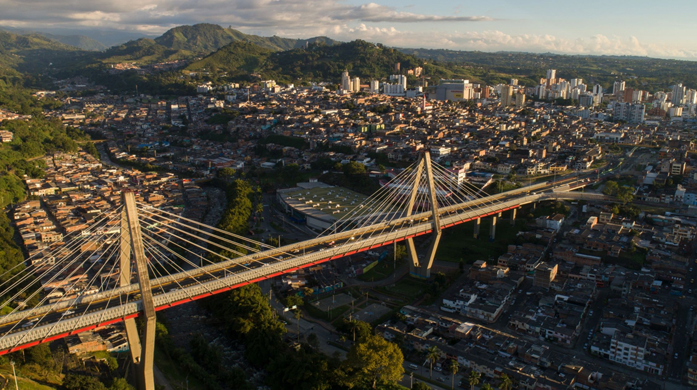
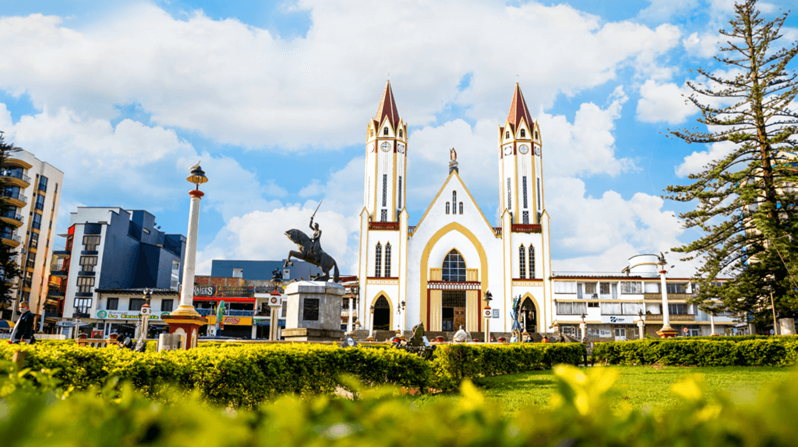
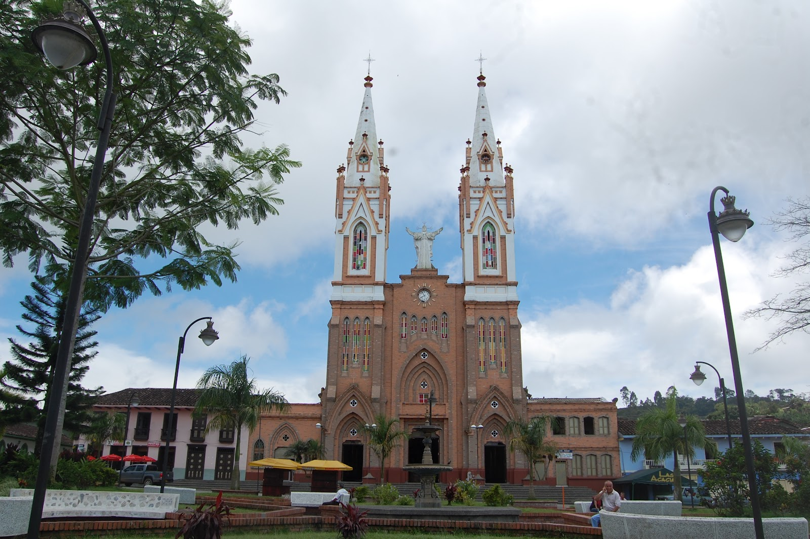
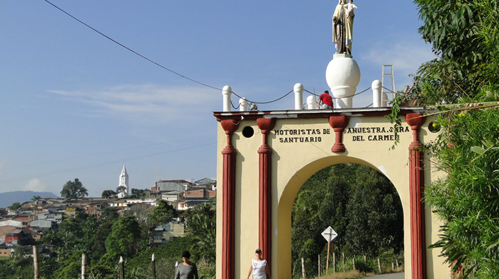
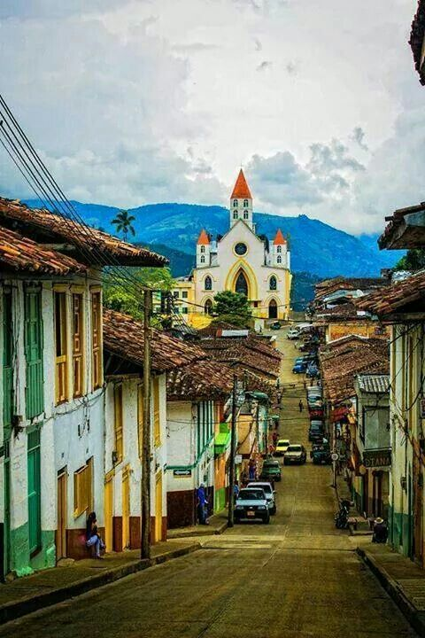

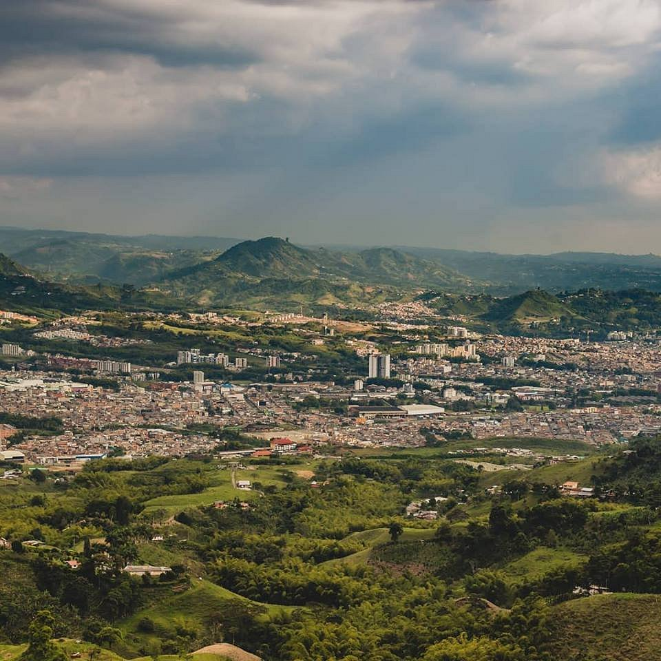
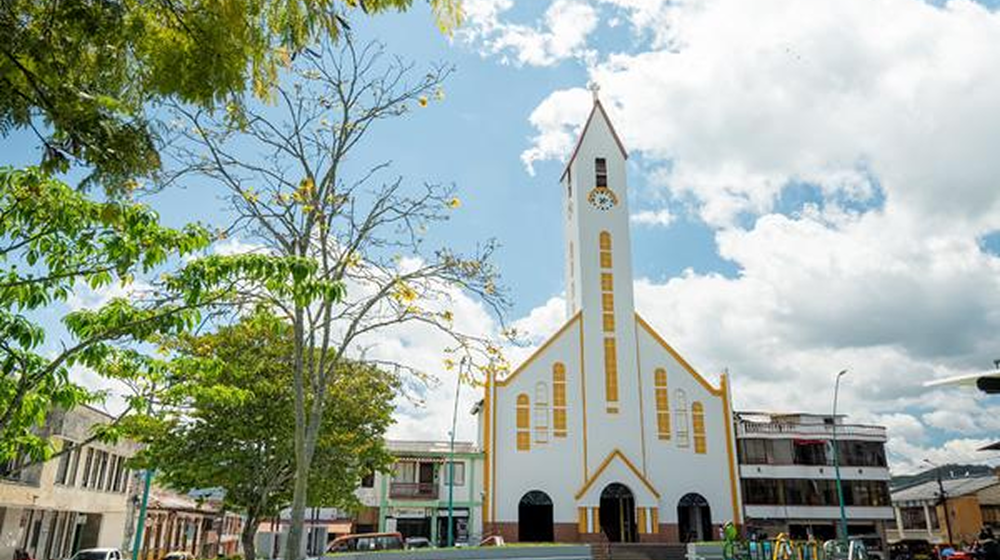
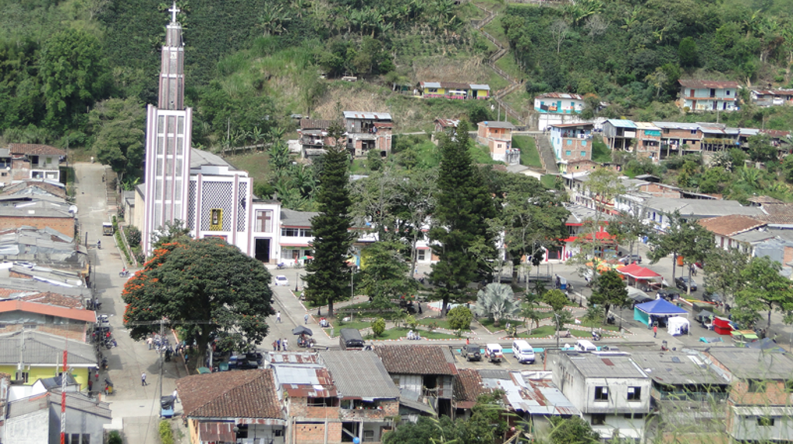
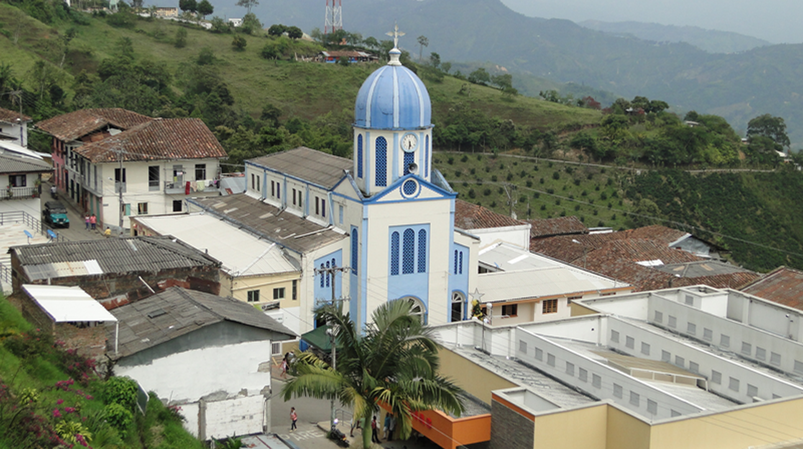
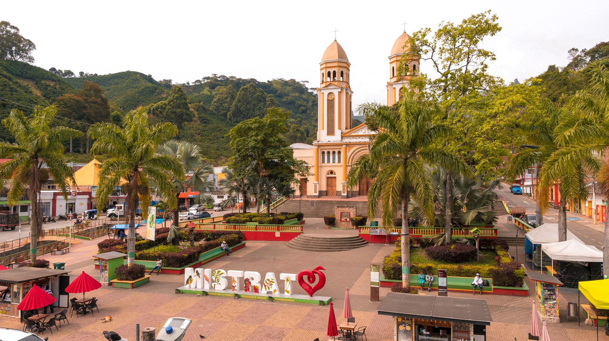
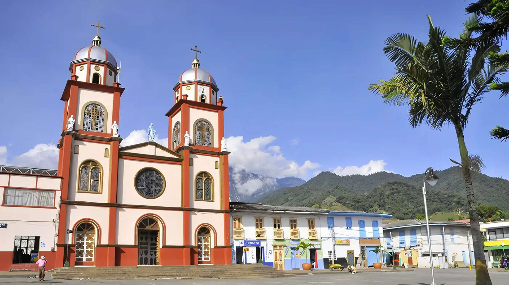